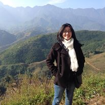

CENTRE D'INTERETS
J'aime beaucoup voyager même si les contraintes budgetaires ne me permettent pas de le faire autant que je le veux. Je suis partie du Vietnam en 2012, un pays où le concept de voyage n'est pas populaire pour ma génération. Il y a 5 ans, le voyage pour moi était simplement de rendre visite à mes amis dans les différentes villes vienamiennes. Après avoir vécu en France, je réalise que le voyage n'est pas simplement de rendre visite à quelqu'un, mais aussi la découverte de l'architecture, des paysages, de l'histoire, de la culture, etc. Depuis ce jour, je profite au maximum possible de mes vacances pour voyager et enrichir mes connaissances.
Par ailleurs, j'adore le sport. J'ai pratiqué le Taekwondo quand j'étais petite pendant 10 ans et mon rêve est de devenir une deuxième Bruce Lee ^_^. Maintenant, je suis en deuxième année de boxe française au club Delecour à Brunoy. Pratiquer du sport après une dûre journée de travail est indispensable pour que je puisse me relâcher et me libérer la tête. J'aime également faire du footing le weekend, ou du trekking quand il fait beau.
Un autre loisir que j'apprécie beaucoup est de faire du jardinage et d'élever des poules dans mon jardin. Cela me fait penser à la campagne Vietnamienne, mon pays natal.